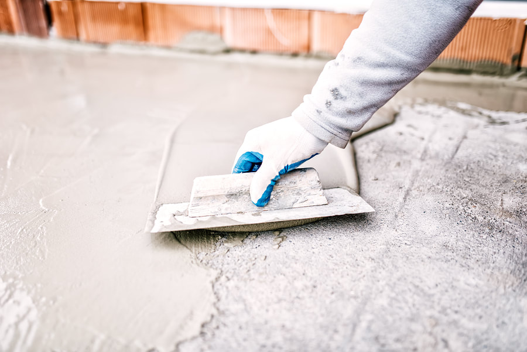
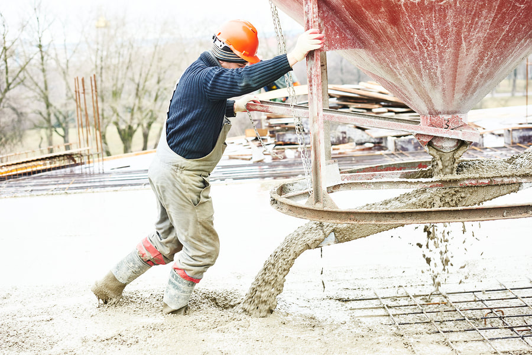
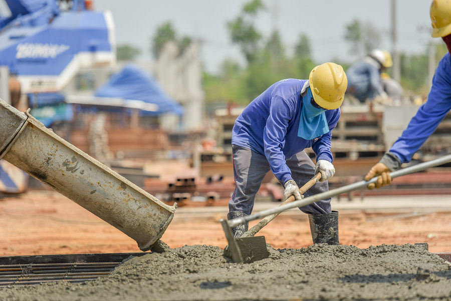
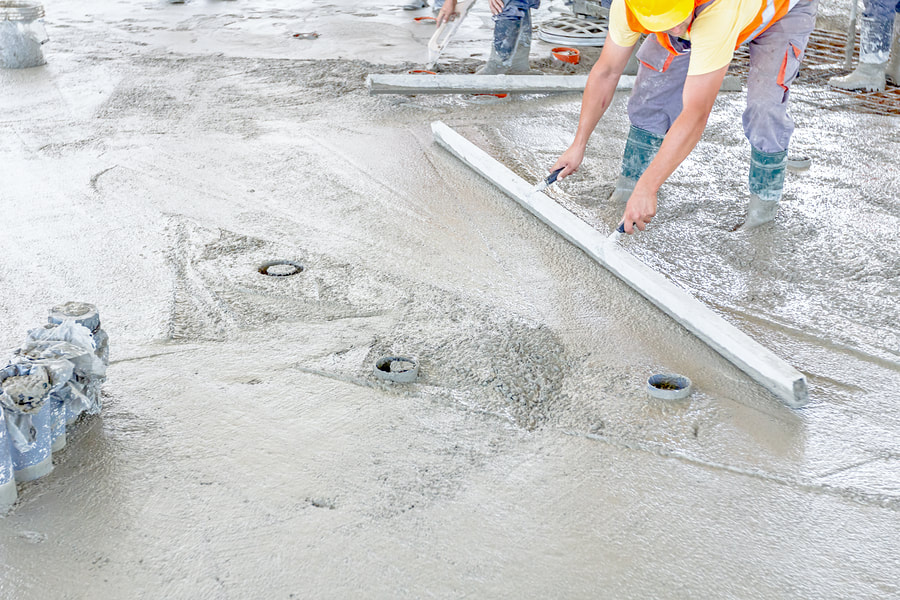
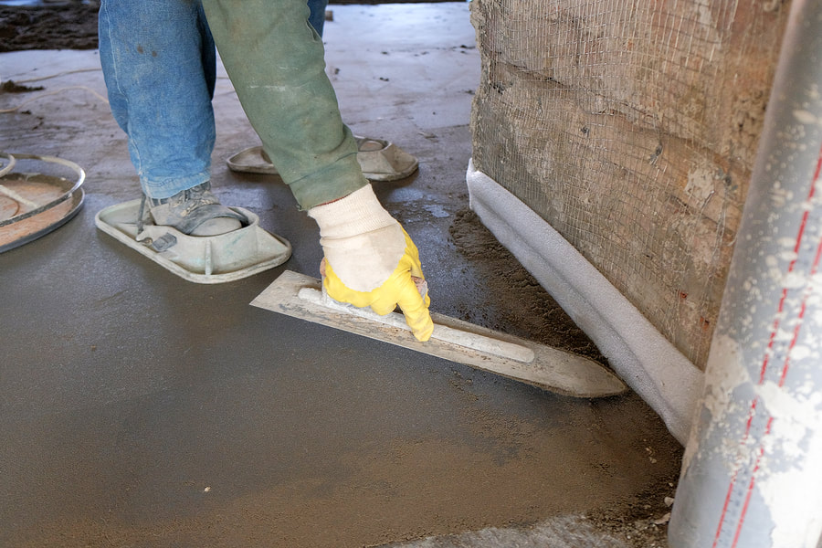
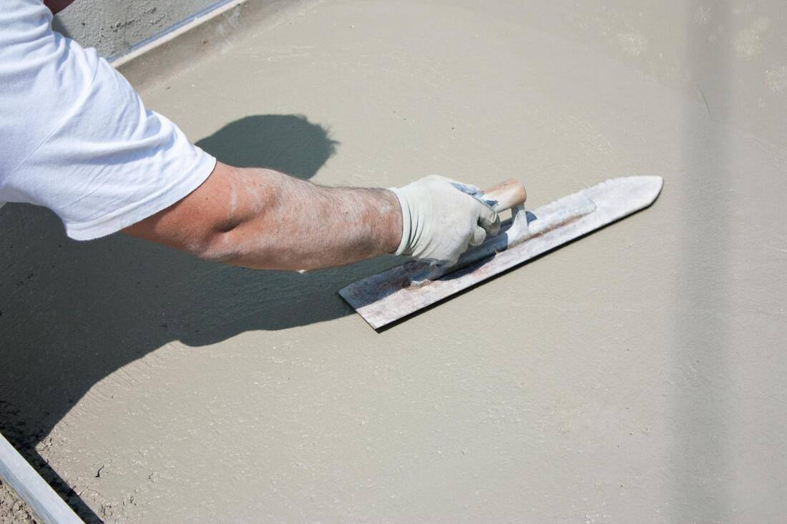
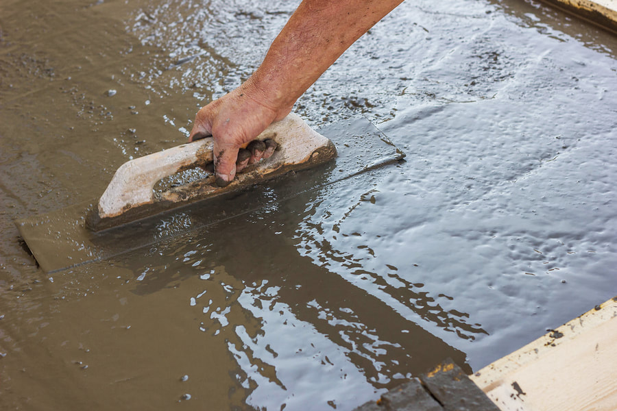
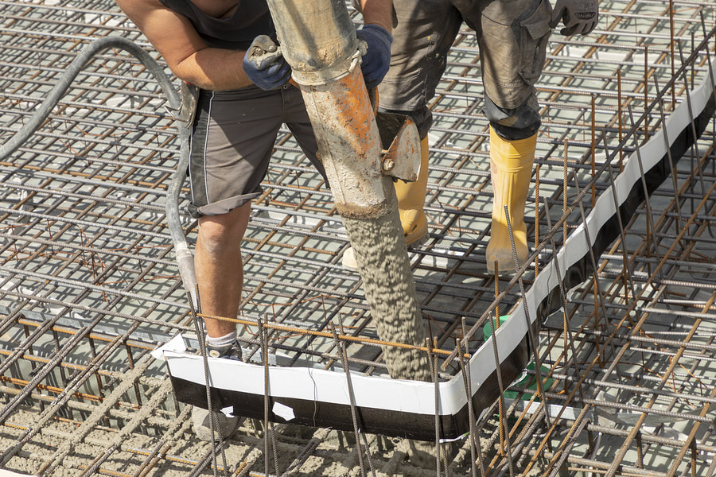

We measure the slab, the grade, and the truck access before we write a number. A photo starts the conversation. It does not set the price.
Youngstown, Ohio
Concrete Contractors Youngstown Ohio
Youngstown Ohio Concrete Contractors provides professional residential and commercial concrete services throughout Youngstown, Ohio, and surrounding communities. We specialize in concrete driveway installation and replacement, concrete patios, stamped concrete, stained concrete, and asphalt paving for homes, businesses, and small parking lots. Whether you're looking to replace a cracked driveway, install a beautiful backyard patio, upgrade your outdoor space with decorative concrete, or improve your property's curb appeal, our team delivers quality workmanship and durable, long-lasting results. We focus on proper site preparation, reliable materials, attention to detail, and customer satisfaction on every project. Unlike contractors who provide estimates based solely on photographs, we evaluate your property in person to provide accurate quotes tailored to your specific needs. From small residential improvements to larger commercial concrete projects, Youngstown Ohio Concrete Contractors is committed to dependable service, competitive pricing, and professional results.
Get a free quote
Services
What we pour and pave
Start with the surface you need. A salt-scaled driveway, a backyard patio, and a shed pad are not the same job, even though all of them are concrete.

Concrete Driveways
New and replacement concrete driveways for Youngstown homes. Durable surfaces for everyday vehicles, with broom-finished and decorative options available.
Details
Concrete Patios
Custom concrete patios for outdoor dining, entertaining, and relaxing. Broom-finished, stamped, and decorative options for Youngstown backyards and homes.
Details
Stamped Concrete
Decorative stamped patterns, textures, and colors for patios, walkways, and driveways. Looks inspired by stone, slate, brick, and other paving materials.
Details
Stained Concrete
Concrete staining that adds distinctive color and natural-looking variation to suitable patios, walkways, and decorative floors around Youngstown homes.
Details
Asphalt Paving
Asphalt driveway installation, replacement, and small commercial paving. Practical paved surfaces with attention to grading, base work, and drainage.
Details
Concrete Installation
Sidewalks, walkways, shed pads, driveway aprons, parking pads, and other residential and small commercial flatwork across Youngstown properties.
DetailsWhy choose us
Why Choose Youngstown Concrete Contractors
If a panel can stay, we say so. If the slab has failed, we say replacement and explain why, instead of covering it.
Base, slope, joints, and drainage are planned for freeze-thaw, road salt, and the clay soils common through the Mahoning Valley.
Broom finish for most drives. Stamped and stained work where the concrete is new or still sound, not as a cover for damage.

Houses
Most calls are a driveway that has scaled, a patio that pitches toward the house, or a walk that has become a trip edge. We replace the failed concrete, set the slope, and finish it for winter in Mahoning County.

Small lots
Shops and houses sometimes need a parking pad, an apron, or a short run of asphalt rather than a backyard patio. The scope is still flatwork. We are not paving highways or pouring building foundations.
Gallery
Flatwork in progress
Finishing, floating, and placing concrete. Call (330) 293-2914 to talk about your own slab.





Our process
How a concrete job gets priced
Name the slab
Driveway, patio, walk, pad, or asphalt. If the old surface has failed, say so. Repair and replacement are different estimates.
Look at water and access
Clay soils in the valley hold water. A truck that cannot reach the forms changes the labor. Both show up when we stand on the lot.
Choose a finish that fits
Broom finish for most drives. Stamp or stain when the slab is new or still sound and you want color or pattern. We will say if the finish you like is the wrong one for winter.
Reviews
Talk to us before you decide
We would rather you hear how we work than read a quote about it. Call (330) 293-2914 and describe the slab, or send the form above.
How much does a new concrete driveway cost in Youngstown?
There is no honest flat price, because the number moves with square footage, thickness, removal, truck access, and the finish. A broom-finish replacement on a flat lot is a different job from a stamped patio with steps and a rebuilt base. We measure the property and send a written estimate. A photo is enough to start the conversation. It is not enough to price the work.
Can you replace a driveway broken up by freeze-thaw and salt?
Yes. That is the usual driveway call around Youngstown. Salt and freeze-thaw scale the surface and open cracks until the slab is loose underfoot. If it is pitted down to the stone, rocking, or heaving, replacement outlasts a skim coat. We look at the base and the drainage before we recommend a full tear-out.
Do you offer stamped and stained concrete, or only gray broom finishes?
We do both, plus plain broom-finish flatwork. Broom finish is the right driveway surface for most houses. Stamped patterns and stains are for patios, walks, and the occasional drive when you want color or the look of stone. The pattern has to be chosen before the pour. Stain is only for a slab that is still sound.
Do I need to remove the old concrete before you pour?
Usually, yes, if the slab is cracked through, settled, or too high to meet the garage or the sidewalk. A thin layer over a moving slab cracks along the old lines. If one panel is still solid and at the right height, we can sometimes leave it and tie the new concrete to it. We make that call on the lot, not over the phone.
Can you do patios, sidewalks, and small pads, or only driveways?
Driveways are common, and we also pour patios, private walks, aprons, and small pads for houses and businesses around Youngstown. A shed pad and a parking pad are everyday work. Road rebuilding and building foundations are not. If you can describe the flatwork, we can tell you quickly whether it is in scope.
Ready to talk through the slab?
Call (330) 293-2914 or send the details. We price the job from the property.